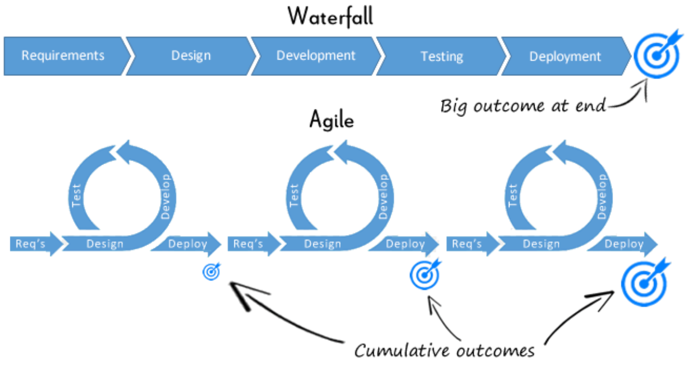

Software Reference¶
Data Structures & Algorithms¶
Study Method¶
Which resources I use to study DSA and how I use them.
General¶
Learn/review:
- The Tech Interview Handbook is one of the best resources for preparing for SWE interviews
- Learn/review topics following the Algorithms Cheatsheet
- Lists topics in priority order
- For each topic, provides a short summary, explains related implementation techniques, gives related LeetCode problems, and much more
- Customize a LeetCode study plan according to your needs using Grind 75
- Learn/review topics following the Algorithms Cheatsheet
- Programiz DSA tutorials is a more comprehensive resource on DSA topics
- Provides detailed explanations
- Gives example implementations in multiple popular programming languages
- NeetCode.io is an excellent resource that classifies LeetCode problems by topic
- Lists both Blind 75 and NeetCode 150 LeetCode problems
- Provides an algorithms roadmap
- Can be used to track your progress
- Has a number of courses, most of which require a paid membership
Implement:
- I implement key algorithms myself and commit them to a private repository
- I use the LeetCode VS Code extension
to solve LeetCode problems in VS Code
- First I try to solve problems myself
- Then I compare it to the most upvoted solutions on LeetCode
- Next I comment what I could have done better
- Sometimes I reimplement my solution using what I learned
- I commit these solutions to a private repository
Before an online assessment or interview¶
- I create a new folder in my LeetCode solutions repo (see the section above for more details)
- The file path can be customized using the
leetcode.filePathVS Code setting
- The file path can be customized using the
- I solve Leetcode problems that the company has asked in the past
- Search for relevant Reddit posts
- Can filter LeetCode problems by company using LeetCode Patterns
- There may be an up-to-date repository that sorts Leetcode problems asked by companies by frequency
- Here is the repository for 2022 (last updated May 2022)
After an online assessment or interview¶
- Record technical questions and solutions
- Finish, clean up, and add comments or research and implement better solution
- Commit to private repository
Reference¶
The notes I wrote while reviewing the main topics listed in the Google Technical Internships Interview Preparation guide. At the bottom of each section I included a relevant resource that you can go to for more.
Merge sort vs quicksort¶
Comparing two popular sorting algorithms.
| Basis for comparison | Merge sort | Quicksort |
|---|---|---|
| Definition | Merges two sorted lists of equal size | Concatenates two sorted lists with elements that are less and greater than the pivot |
| Space complexity | \(O(n)\) | \(O(1)\) (in place) |
| Time complexity (worst case) | \(O(n\log n)\) | \(O(n^2)\), random pivot minimizes chance of worst case |
| Efficiency for large \(n\) | Efficient for larger arrays, consistent speed | Inefficient for larger arrays, but fast for small \(n\) |
| Dependency of speed on \(n\) | Consistent for any \(n\) | Faster for small \(n\), slower for large \(n\) |
| Preferred for | Linked lists, because merging can be done in \(O(1)\) time and space given reference to the previous node | Arrays, because quicksort requires lots of random access which arrays can do in \(O(1)\) since elements are contiguous |
For more, see GeeksforGeeks quick sort vs merge sort article.
Min and max heaps¶
A min heap is a complete tree where all paths from root to leaf are non-decreasing. Since the root node is always the minimum element, min heaps are useful for problems that require accessing or removing the minimum element efficiently. Similarly, max heaps are used to access or remove the maximum element efficiently.
| Min heap function | Description |
|---|---|
| Insert | Insert at the leftmost spot in the last level then heapify up in \(O(h)=O(\log n)\) |
| Remove min | Swap the leftmost spot in the last level with the root (min) then heapify down in \(O(h)=O(\log n)\) |
| Build | Heapify down from root in \(O(n)\) |
| Heap sort | Build then remove min \(n\) times makes non-ascending order in \(O(n\log n)\); could reverse to make non-descending order |
For more, see Programiz heap sort notes.
Adjacency list vs matrix¶
Comparing two popular graph representations.
Characteristics of these graphs:
- \(n\) vertices
- \(m\) edges
- No parallel edges
- No self-loops
| Basis for comparison | Adjacency list | Adjacency matrix |
|---|---|---|
| Representation | Linked list of neighbors for each edge | Rows and cols are the edges |
| Space complexity | \(\Theta(n+m)\) | \(\Theta(n^2)\) |
| incidentEdges(\(v\)) | \(\text{deg}(v)\) | \(\Theta(n)\) |
| areAdjacent(\(v\), \(w\)) | \(\text{min}(\text{deg}(v), \text{deg}(w))\) | \(\Theta(1)\) |
| insertVertex(\(o\)) | \(\Theta(1)\) | \(\Theta(n)\) amortized |
| insertEdge(\(v\), \(w\), \(o\)) | \(\Theta(1)\) | \(\Theta(1)\) |
| removeVertex(\(v\)) | \(\text{deg}(v)\) | \(\Theta(n)\) amortized |
| removeEdge(\(e\)) | \(\Theta(1)\) | \(\Theta(1)\) |
| removeEdge(\(v\), \(w\)) | \(\Theta(\text{min}(\text{deg}(v), \text{deg}(w)))\) | \(\Theta(1)\) |
For more, see Programiz adjacency list and adjacency matrix notes.
Breadth-first vs depth-first search¶
Comparing two popular search algorithms.
| Basis for comparision | Bread-first search | Depth-first search |
|---|---|---|
| Edge types | Discovery and cross | Discovery and back |
| Implemented using | Queue | Stack |
| Used for | Shortest path from root to any vertex | Topological sort |
Common features:
- Discovery edges make a spanning tree
- Can be used to detect cycles and count components
For more, see Programiz BFS and DFS notes.
Greedy algorithms¶
- Dijkstra: finds shortest path of directed graph with nonnegative edge weights
- Checks
D(u) + w(u, v)for being lessD(v)in RELAX.
- Checks
- Kruskal: find MST using min heap of edge weights in \(O(m\log n)\)
- Prim: find MST of undirected graph
- Checks
w(u, v)for being less thanD(v)in RELAX.
- Checks
For more, see Programiz greedy algorithms notes.
NP-complete¶
Definitions:
- \(P\): all decision problems that can be solved in polynomial time
- \(NP\): all decision problems for which the instances where the answer is "yes" have proofs that can be verified in
[nondeterministic] polynomial time
- Has an efficient verifier, but may not have an efficient solver
- NP-complete: all problems in \(NP\) which can be reduced to any other \(NP\) problem in polynomial time
- Has an efficient verifier, but does not have an efficient solver
- NP-hard: all problems that are reducible to a known NP-complete problem (like boolean satisfiability, SAT)
- Any NP-complete problem can be reduced to any NP-hard problem in polynomial time → all NP-complete problems can be reduced to any NP-hard problem in polynomial time → if there is a solution to one NP-hard problem in polynomial time, there is a solution all \(NP\) problems in polynomial time
For more, see this StackOverflow answer.
Proving a problem \(P\) is NP-complete:
- Prove that \(P\) is in \(NP\)
- Show what kind of proof for instances where the answer is "yes" can be checked in polynomial time
- Prove that \(P\) can be reduced to a \(NP\) problem in polynomial time
- Give a polynomial time algorithm that transforms instances of a known NP-complete problem into instances of \(P\) with the same answer
Popular problems:
- Traveling salesman: Given a list of cities and the distances between each pair of cities, what is the shortest possible route that visits each city exactly once and returns to the origin city?
- Knapsack: Given a set of items, each with a weight and a value, determine the number of each item to include in a collection so that the total weight is less than or equal to a given limit and the total value is as large as possible
Software Development Concepts¶
Be able to explain concepts in your own words and give examples of you applying them.
Agile¶
- Iterative software development
- Purpose: rapid delivery of high quality software
- Documenting and resolving issues
- Kanban vs Scrum

Testing¶
- Test-driven development
- Black vs white box testing
- How to develop a test plan
- Types of tests: unit, integration, functional, regression
- Fault injection
- Corner cases
- Root-cause analysis
- Parts of a good bug report